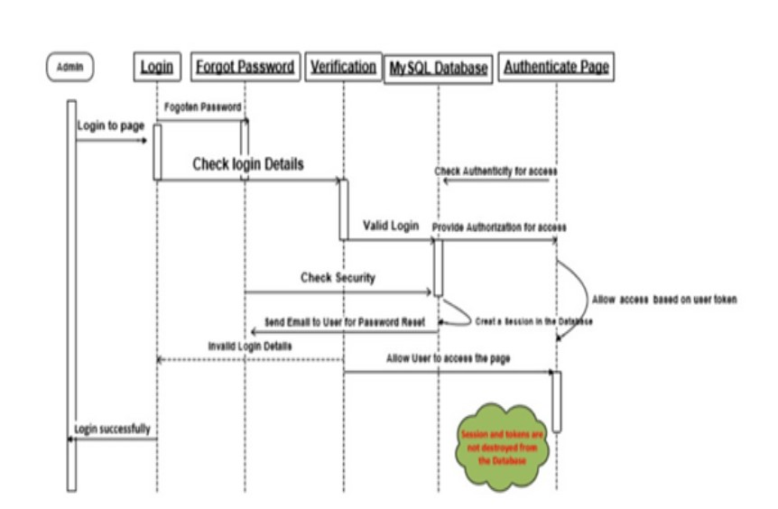

A. Collaborative Discussion 1
According to Hassan et al (2018) Broken Authentication is a weakness that is exploited as a result of poor configuration of how web sessions are managed after genuine authentication procedures are accomplished. It is realized when a threat agent bypasses the authentication process and gets access to the system within the active session of genuine users. OWASP Foundation (2021) says that the occurrence of Broken Authentication is rampant because of flaws in design and implementation of most identity and access controls. Hackers can discover broken authentication using manual ways and take advantage of them using sophisticated tools that contain password lists and dictionary attacks. OWASP Foundation (2021) add that hackers need only to come across details of few user or admin accounts to compromise the system and collect protected sensitive and valuable information.

Figure 1: Sequence Diagram of Login Authentication System without destruction of Tokens and Sessions in the Database. Adopted and modifies from freeproject(2018)
Figure 1 above show a sequence diagram of a login system that does not destroy token and sessions in the database. This allows users to endlessly be logged into the system even after they have logged out. If the flaw in discovered by hackers, it can be exploited.
-
Freeproject(2018)Login sequence diagram of login authentication system Available from: https://hdivsecurity.com/owasp-broken-authentication [Accessed 15 August 2021].
-
Hassan, M., Nipa, S., Akter, M.,Haque, R.(2018) Broken Authentication and Session Management Vulnerability: A Case Study Of Web Application. International Journal of Simulation: Systems, Science & Technology :1-12 Available from: https://www.researchgate.net/publication/325961962_Broken_Authentication_and_Session_Management_ [Accessed 15 August 2021].
-
OWASP Foundation(2021) A2:2017-Broken Authentication Available from: https://cwe.mitre.org/data/definitions/1028.html[ Accessed 15 August 2021].
Feedback Posted by Natasha Hales
Hi David, thank you for your post. A good example of referencing. Tash